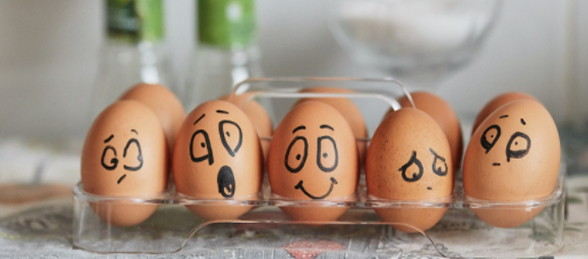

- Самооценка и самопринятие
- Self
 Самооценка и самопринятие
Самооценка и самопринятие
Эмоциональное выгорание – стадии и симптомы, методы восстановления и профилактики
Изначально термин «эмоциональное профессиональной сфере и относился...

Изначально термин «эмоциональное профессиональной сфере и относился...
Один из самых важных навыков, которые может дать работа с психотерапевтом...
Изначально термин «эмоциональное профессиональной сфере и относился...
Один из самых важных навыков, которые может дать работа с психотерапевтом - умение в разных ситуациях по-разному обходиться...
Клиенты часто спрашивают, как КОНТРОЛИРОВАТЬ свои негативные эмоции. Пришло время об этом написать!
Изначально термин «эмоциональное я...
Один из самых важных навыков, которые может дать работа с психотерапевтом - умение в разных ситуациях по-разному обходиться...
Клиенты часто спрашивают, как КОНТРОЛИРОВАТЬ свои негативные эмоции. Пришло время об этом написать!